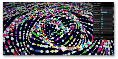
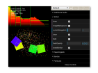
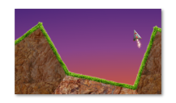
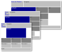

About me
Foreword
Honoring the engineering intention behind the design of CSS/HTML of separation of presentantion and content, printing this page
outputs the information as a CV.
Personal Information
Name
Sebastian E. Ferreyra Pons
E-mail
sebastian@ferreyrapons.com.ar
Website
http://ferreyrapons.com
Address
Mitre 385
G4200DKG Santiago del Estero
Argentina
Phone
(54 9 385) 525-8591
Date of birth
September 7, 1973
Place of birth
Argentina
Citizenship
Argentina, Canada
Languages
English, Spanish, French
all written and spoken fluently
Education
1991-1992
Three terms of advanced courses in mathematics, computer science and physics at
S.U.N.Y.
(State University of New York) at Stonybrook.
1989-1991
Grades 11 and 12 at Smithtown High School East, St. James, NY. Including elective
college level courses on computer science, mathematics and analog and digital
electronics.
1985-1989
Grades 7, 8, 9 and 10 at F.A.C.E. (Fine Arts Core Education), Montreal, Quebec,
Canada. F.A.C.E. is a bilingual (English and French) school with academic orientation
toward the arts.
1977-1984
Primary education in Spanish in Santiago del Estero, Argentina except 1982 finished
in Flagler Elementary School, Miami, Florida.
Experience
2015-Present / Participation in Interactive Arts Collective
Visual experimentation, live coding performances with live musical bands and interactive
installations in Santiago del Estero. Tripulantes, Casa Nave, Santiago del Estero, Argentina.
2015-Present / Web Technologies Workshops for Artists
Organization of educational workshops teaching web technologies like HTML5, CSS and
Javascript for contemporary and conceptual artists. Casa Nave, Santiago del Estero, Argentina.
2013-2015 / Technical Project Manager and Software Architect
Project manager for Ensembleweb developing a gameification
based website for enhancing engagement and performance in sales workgroups for EnsembleWeb,
a Canadian web site development company. Tasks involved hiring, training, directing & maintaining
a development team, interacting with marketing and designing the architecture of the system
based on commercial and technical requirements. EnsembleWeb
2010-2014 / Wordpress Plugin Development
Consulting, custom plugin design and development for EnsembleWeb, a Canadian web site
development company. EnsembleWeb
2008-2013 / Graphic Design & Technical Consulting
Graphic design, CGI imaging, technical consulting & special purpose software development
for Expressart, an advertising agency based in Santiago del Estero, Argentina.
Expressart
2007 – 2008 / Team Leader & Software Development
Development of software tools for the human resources industry including design
implementation and developer team coordination. The system, based on modern architectural
design, provides a sophisticated desktop user interface but accesses distributed web
services under the hood thus providing a complete user experience while still reaping the
benefits of SOA (Service Oriented Architectures). Responsibilities included maintenance
of the various servers running in the system, of the promotional web site and the
authorship and maintenance of source code in Java, C# 2.0, HTML and SQL for software
destined to run on Windows and Linux.
CandidateHunter International
2003-2006 / Project Management & Software Development
Funding and managing a 3-person team in the development of an object oriented database
engine and its supporting developer and management tools for Microsoft’s .NET environment
and Sun’s Java platform. This OODB was my design and is intended to support nearly orthogonal
data-persistence facilities for data objects in these platforms. Features being developed
include ACID transactions, multi-server distributed storage nodes and data versioning for
the purposes of auditing and conflict-resolution.
2004-2005 / Website Content Editor
Front-page story editor for JavaLobby.org, a website specializing in the Java developer
community. The main responsibilities involve screening daily Java-related news and writing
small articles with the intent of generating in-depth discussions among the members of the
Java community. These tasks require staying up-to-date in all Java industry developments.
2000-2004 / Ingeniería de Software
Low-level development of high-performance primitive graphics rendering APIs and
components for Java applications including gradient rendering at speeds equalling solid
color filling in that platform. Different versions of these components are licensed
to open-source projects (Kunststoff LnF y
Metouia LnF) and a version taking advantage of
hardware acceleration to Jide Software for use in
its component suite y and user interface framework.
2002-2003 / Software Engineering
Development of software architecture and components for internet connected multi-user
server providing multi-company unified facilities for bus seat availability, reservation
and ticket sale for nation-wide remote terminals. This system provides a graphical
display over a map and when there is no direct service between two geographic points,
provides possible connection points based on user-selected time constraints. 2-tier
client/server architecture: Database with business logic in Stored Procedures on the
server and Java technology including JDBC and SWT on the client-side.
1999-2002 / Software Engineering
Development and maintenance of multi-user system for legal firms managing overdue credit
accounts using Java technology including Servlets, JSP, JDBC, JSP, XML, XSL, Dynamic HTML
and CSS. 4-tier client/server architecture: Database, Business logic, Document generation
on the server side and User Interface in the client. Currently running on company
managing 43000+ accounts judicially and extra-judicially on database distributed over
several provinces in northwestern Argentina, synchronized through the Internet.
1998-2001 / Website Administrator
Web site design, implementation and webmastering for
Poder Judicial de la Provincia de Sgo. del Estero.
This site belongs to the judicial branch of power of this province. Everything in this site
including the navigational structure, graphics and animations was designed and created by me.
Although no longer in charge, much of the graphics, animations and source code currently in
use remain my creation as can be verified by the copyright notice in the html source code.
1998-1999 / Manager - Technical Service & Support Department
Head of technical department for the local franchise of
Arnet, the largest ISP in Argentina.
This franchise includes all the territory of the province of
Santiago del Estero.
1996-1997 / Technical Consultant - Information Technology
Development of small information systems in Java for companies local to Sgo. del Estero,
Argentina. Personnel training for various organizations in Sgo. del Estero on basic Internet
Skills. Consultant for Icox, a Canadian-Argentine company
providing internet services for Argentine businesses.
Ref. Bruno Schmidt
1993-1998 / Technical Consultant - Graphics and Video
In charge of installation and maintenance of computer systems and digital/analog video
editing equipment. Computer Animation for video. Calibration, digital treatment and
preparation of pre-press originals for color catalogs and flyers. Personnel training to
assist in these tasks, AMP Producciones, Sgo. del Estero, Argentina.
Technical consulting and personnel training, FREDY Publicidad, San Miguel de Tucumán, Argentina.
2D & 3D graphic design. Participation in production of TV commercials for these companies.
1992 / Sales Representative
Sales and promotion of educational material and personnel training for direct sales
and marketing. Grolier Inc, Canada.
1990-1991 / Software Developer
Design and implementation of computer applications and tools, LAN and computer
system maintenance and personnel training. Among applications developed are data
acquisition and control programs for gel electrophoresis of DNA and mathematical
analysis tools, S.U.N.Y. at Stonybrook, biochemistry department.
Ref. Dr. Benjamin Chu
1989-1992 / Freelance Graphic Designer
Freelance graphic design for small companies and businesses in Long Island.
1989-1992 / Programming Assistant
Participation in development of routines in C and Assembly Language for large
programming projects for companies such as Radio Shack/Tandy and Lavalin Engineering
Inc. in Montreal, Canada. SOFTPOWER Inc., New York.
Acquired Skills
Applications:
Systems Architecture, Interactive Graphics, Communications, Data Acquisition,
Control, Operating Systems, Utilities
Operating Systems:
WINDOWS, LINUX, UNIX, CP/M, MS-DOS
Computer Languages:
JavaScript, Java, C#, F#, C/C++, Assembler for MC68000, 80x86, 8080/8085/Z80,
BASIC, PASCAL, FORTRAN
Web Standards:
HTML5, CSS3, JSON, XML, XSL, JSP, ASP.NET, ASP, Flash
Software Platforms & Computer Programs:
Node.js, Microsoft Internet Information Server, MySQL Server, Microsoft SQL Server,
Idea Webstorm, Eclipse, Sun Forte/Netbeans, Autodesk 3D Studio MAX, Blender,
Adobe Photoshop, GIMP, Macromedia Flash, Adobe Illustrator, Macromedia Freehand,
Corel Draw, Adobe Page Maker, Adobe Premiere, Microsoft Office, Autodesk Animator Pro, etc.
Other skills:
Extensive teaching and training experience. Marketing and advertising experience
in print, radio, TV and the web. Direct marketing experience.
Experiments
Stateless Webgl Shader Particles

An experiment created while developing the particle vertex and fragment shader code used in
this website. While my site is effortlessly using around 5000 GPU particles and the demo starts with
30000, on a decent machine a GPU can handle quantities around the hundreds of thousands.
Audioreactive 2D Canvas Particles

The current result of various live coding sessions during live music performances using 2D
Canvas and the Web Audio APIs. You need to grant the page access to your microphone and
permission to open a second window for displaying the graphical output as it is intended
to run on two monitors. While not easily accesible, it also has hard coded MIDI controller
functionality that you can adapt if you download the gh-pages branch from the github repo.
2D Canvas Game Experiment

A small experiment written while teaching about game coding. It's using Box2DWeb for physics and the HTML Canvas 2D API.
vminpoly

A polyfill for the newer CSS3 distance units and some media queries.
P.D.:
While there are more experiments that I've built over time that I want to publish, I'm still
working on this website so hang on and they'll start showing up as my time allows! In the
meantime you may check out my old website.
Articles
Collections: Multivalue-per-key Maps
The Java Collections API in java.util.* is a very powerful and fundamental toolkit for
managing sets of objects and is used in practically all facets of software development,
from low-level caches, to O/R mapping, to GUIs.
However, occasionally we have needs that extend beyond the basic functionality provided
in the API. One very common need not handled by the collections framework is to provide
maps that can hold many values for a particular key, much like databases feature non-unique
key indexes. Having such a collection class would make this job very simple in Java.
Continue reading...
Algorithms: Phonetic Coder for Spanish Words
Sometime ago I posted some code which ranks names according to their similarities based on
Levenshtein's word difference algorithm. In this article I mentioned I had developed an
algorithm to encode names quasi-phonetically according to their pronounciation in Spanish,
much in the spirit of Soundex and Metaphone.
Since then, I've received a few requests by email with respect to this algorithm so I think
it would be good to answer them all in a single Java Tip, while simultaneusly showing how
to use Regular Expressions efficiently in Java.
Continue reading...
Technique: Generic Linked Lists through Inheritance
Although the java.util.LinkedList class included in the JDK is good enough for most cases
requiring linked lists, sometimes conditions will arise when it might not be as useful.
Here I propose an alternative implementation using a combination of generics and inheritance
optimized for better memory economy and possibly a slight increase in speed, although the
latter should be barely noticeable. This example will also illustrate some interesting
applications of generics.
To understand where I'm coming from I'll need to explain some things about how Java stores
objects in the heap and how this affects the standard LinkedList implementation.
Continue reading...
Persistence Layers
As I undertake my first project management role, where I�ll be leading a really small group of
3 developers (myself included) into an agile development effort, I�m allowing myself to look at
all the unconventional technologies on the look out for interesting innovations before the
design is completely fixed. I will however keep a conservative attitude so as not to get too
excited about the toys to be found out in the wild (wild toys might eat your project and
your budget!).
Continue reading...
Text: Human Names Similarity using Levenshtein Algorithm
Using the previously posted Levenshtein Edit Distance method, this one builds upon the
functionality to provide a name similarity ranking.
The benefits it provides over using plain LD is that it is indifferent to the order a person's
name is written, thus being very useful for sorting results of name searches.
Continue reading...
Text: Levenshtein Word Distance
Here's a small implementation of the Levenshtein Word Distance algorythm written in Java.
The algorythm is good for measuring edit distance between two words and is normally used for
spell checking and similarity sorting, but I've been told it can be used for other things as
well. If you want some in depth explanation of how it works check out this site or this one
that has a nice little applet showing its internals at work.
Continue reading...
Swing: Tiling Windows
JDesktopPane as it is doesn't provide tiling and cascading. Here's the routine for tiling. Its
priority is to get as many windows as possible to have the same size. Here's the code
cascading windows.
Continue reading...
Swing: Cascading Windows
JDesktopPane as it is doesn't provide tiling and cascading. Here's a simple routine for cascading.
The code is implemented in static methods for simplicity but some might prefer to include the
methods in a subclass of JDesktopPane or a DesktopManager.
Continue reading...
Graphics: Painting Textures Fast
Following the recent Java2D discussion some of you might be wondering how to put some of that
information to good use. A deeper understanding of why TexturePaint results in lower preformance
can be found in that thread.
Here's a simple way to paint an arbitrary Java2D Shape with a texture using all the hardware
acceleration the current rendering pipelines can provide. This routine, although still having
lots of room for important optimizations, is a lot faster than ye' old TexturePaint.
Continue reading...
Face to face with Java2D
Woa! Don't fire up those flame-throwers just yet! This isn't a thread about why native code is
better, etc, etc. I mean to say that Java2D could fly just using better Java code.
Take Color, GradientPaint and TexturePaint and the low-level pipelines that actually paint stuff
with these classes for example. Here are three implementations of the Paint interface that really
make me wonder what's going on over at Sun.
Continue reading...